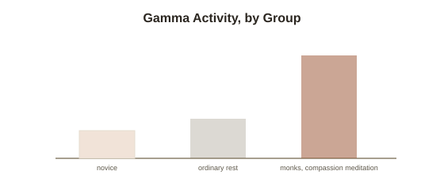

Chapter 2: Gamma Waves and the "Olympic-Level" Meditator Studies
Chapter 1 mentioned, as a genuine loose end, that some advanced meditators can trigger unusually high-amplitude gamma wave activity rarely seen outside seizures — and flagged that researchers don't fully understand what it means. It's worth going deeper into this specific finding, both because it's one of the most striking results in contemplative neuroscience, and because it's an unusually good case study in exactly how much interpretive caution this kind of striking data actually deserves.
The Davidson-Lutz gamma synchrony study
Neuroscientists Antoine Lutz and Richard Davidson, working with Tibetan Buddhist monks with an average of over 10,000 hours of meditation practice, published a widely-cited 2004 study measuring EEG activity during a specific practice sometimes described as unconditional loving-kindness and compassion meditation. The monks showed dramatically elevated gamma wave (a high-frequency band of brain electrical activity, typically associated with binding together information from different brain regions into a single, unified moment of perception or thought) synchrony — both higher amplitude and better coordination across distant brain regions than has been observed in essentially any other context in the meditation and neuroscience literature, including in the same monks during ordinary, non-meditative rest, and considerably higher than in a comparison group of meditation-naive control participants trying the same practice for the first time. Critically, the gamma differences didn't only appear during active meditation — some monks showed elevated baseline gamma activity even during ordinary rest, suggesting a possible lasting trait change rather than only a temporary meditative state.
What made this genuinely striking to the field
Gamma synchrony of this magnitude was, at the time, mostly associated in the existing neuroscience literature with pathological states — certain types of seizure activity being the most prominent example — which is what made the finding both attention-grabbing and immediately controversial. The monks showed no clinical signs of seizure activity or any pathology; the readings looked structurally similar to seizure-associated gamma in some respects while occurring in the context of calm, voluntary, skilled mental practice, in experienced practitioners showing no distress or dysfunction whatsoever. This combination — a signal pattern typically seen in a pathological context, produced instead by a highly trained, voluntary, and apparently beneficial mental skill — is exactly why the study generated so much interest, and exactly why it demands real interpretive caution rather than a simple headline conclusion in either direction.

Why "what it means" is still genuinely unresolved
The honest scientific status of this finding, consistent with Chapter 1's broader framing of this topic, is real-but-unexplained rather than either dismissible or fully understood. Several complicating factors keep the interpretation open: the study's sample size was small (a common limitation across intensive-meditator research, since practitioners with tens of thousands of hours of practice are, by definition, a rare population to recruit for research), the monks were unusually experienced compared to virtually anyone else ever measured this way, and gamma-band EEG measurement itself is technically difficult to record cleanly, with muscle artifacts (particularly from facial and scalp muscle tension) capable of producing signals that can be mistaken for genuine cortical gamma activity if not carefully controlled for — a technical critique some researchers have specifically raised about this literature. None of this means the finding is wrong; it means the field has a real, replicated data point without yet having a fully agreed-upon account of the underlying neural mechanism or its precise functional significance.
What can be said with real confidence
Pulling back to what's actually well-supported: intensive, sustained meditation practice produces measurable, unusual EEG signatures not seen in novice practitioners or ordinary rest, in a population of highly experienced meditators — that much is a solid, replicated empirical finding. What remains genuinely open is the further, more interesting question the popular coverage of this study often skips past: whether this gamma activity is a marker of some specific, trainable cognitive or attentional capacity uniquely accessible through sustained contemplative practice, a general byproduct of a very particular kind of intense mental effort achievable through other sufficiently demanding cognitive training, or something else current models of attention and binding don't yet fully capture. Chapter 1's honest "we know it works, we're less sure why" framing applies here in an unusually sharp, literal form.
Try this
Ideas for noticing or testing this in your own life.
- Notice the pull toward an overconfident interpretation when a striking neuroscience finding like this one gets summarized in a headline — practice restating this specific study's actual, more cautious finding in your own words.
- Try a short loving-kindness or compassion-focused meditation — bringing someone to mind and deliberately generating goodwill toward them for a few minutes — the specific practice associated with this chapter's findings, regardless of whether you'll notice any gamma activity yourself.
Worth pulling on?
A few loose threads from this chapter — if any of these genuinely grab you, that's a good sign of where to go next.
- Chapter 1's other loose end — that intensive practice can also surface real, distressing experiences, not just striking EEG readings — deserves the same level of honest, direct treatment. → The subject of the next chapter: the "dark night" phenomenon and meditation-related adverse effects.
- The binding problem gamma synchrony is thought to relate to — how the brain unifies separate streams of information into one coherent experience — connects directly to a foundational question in philosophy of mind. → Already in the library: Philosophy of Mind covers the hard problem this binding question ultimately runs into.